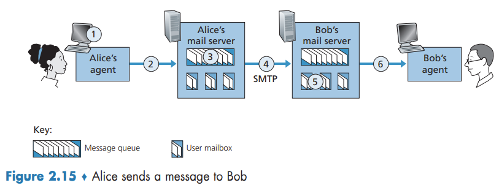

Application Layer
This whole chapter is part of the curriculum for TTM4100, except for the section in 2.5 about Bittorrent.
Principles of Network Applications
Network Application Architectures
Two predominant architectural paradigms used in modern network applications: the client-server architecture or the peer-to-peer (P2P) architecture.
One of the most compelling features of P2P architectures is their selfscalability. However, P2P applications face challenges of security, performance, and reliability due to their highly decentralized structure.
Processes Communicating
Processes on two different end systems communicate with each other by exchanging messages across the computer network.
Client and Server Processes
In the context of a communication session between a pair of processes, the process that initiates the communication (that is, initially contacts the other process at the beginning of the session) is labeled as the client. The process that waits to be contacted to begin the session is the server.
The Interface Between the Process and the Computer Network
A process sends messages into, and receives messages from, the network through a software interface called a socket.
A socket is the interface between the application layer and the transport layer within a host. It is also referred to as the Application Programming Interface (API).
Addressing Processes
In the Internet, the host is identified by its IP address. The sending process must also identify the receiving process (more specifically, the receiving socket) running in the host. A destination port number serves this purpose.
Transport Services Available to Applications
When you develop an application, you must choose one of the available transport-layer protocols. We can broadly classify the possible services along four dimensions: reliable data transfer, throughput, timing, and security.
Reliable Data Transfer
If a protocol guarantees that the data sent by one end of the application is delivered correctly and completely to the other end of the application, it is said to provide reliable data transfer.
Throughput
With such a service, the application could request a guaranteed throughput of r bits/sec, and the transport protocol would then ensure that the available throughput is always at least r bits/sec.
Applications that have throughput requirements are said to be bandwidth-sensitive applications. Elastic applications can make use of as much, or as little, throughput as happens to be available.
Timing
A transport-layer protocol can also provide timing guarantees.
Security
A transport protocol can provide security services such as confidentiality, data integrity and end-point authentication.
Transport Services Provided by the Internet
The Internet makes two transport protocols available to applications, UDP and TCP.
TCP Services
The TCP service model includes a connection-oriented service and a reliable data transfer service. TCP also includes a congestion-control mechanism, throttling a sending process (client or server) when the network is congested between sender and receiver.
UDP Services
UDP is a no-frills, lightweight transport protocol, providing minimal services. There is no handshaking or congestion-control mechanism.UDP is an unreliable data transfer service, with no guarantee that the message will ever reach the receiving process, and they may arrive out of order.
Services Not Provided by Internet Transport Protocols
Many firewalls are configured to block (most types of) UDP traffic, Internet telephony applications often are designed to use TCP as a backup if UDP communication fails.
Application-Layer Protocols
An application-layer protocol defines how an application’s processes, running on different end systems, pass messages to each other.
- The types of messages exchanged, for example, request messages and response messages
- The syntax of the various message types, such as the fields in the message and how the fields are delineated
- The semantics of the fields, that is, the meaning of the information in the fields
- Rules for determining when and how a process sends messages and responds to messages
The Web and HTTP
Overview of HTTP
The HyperText Transfer Protocol (HTTP), the Web’s application-layer protocol, is at the heart of the Web. HTTP has a request-response behavior. HTTP uses TCP as its underlying transport protocol. Because an HTTP server maintains no information about the clients, HTTP is said to be a stateless protocol.
Non-Persistent and Persistent Connections
Should each request/response pair be sent over a separate TCP connection, or should all of the requests and their corresponding responses be sent over the same TCP connection? In the former approach, the application is said to use non-persistent connections; and in the latter approach, persistent connections.
HTTP with Non-Persistent Connections
We define the round-trip time (RTT), which is the time it takes for a small packet to travel from client to server and then back to the client. The RTT includes packet-propagation delays, packet queuing delays in intermediate routers and switches, and packet-processing delays.
The browser initiates a TCP connection between the browser and the Web server; this involves a "three-way handshake" - the client sends a small TCP segment to the server, the server acknowledges and responds with a small TCP segment, and, finally, the client acknowledges back to the server.
A brand-new connection must be established and maintained for each requested object. For each of these connections, TCP buffers must be allocated and TCP variables must be kept in both the client and server. Each object suffers a delivery delay of two RTTs—one RTT to establish the TCP connection and one RTT to request and receive an object.
HTTP with Persistent Connections
With HTTP/1.1 persistent connections, the server leaves the TCP connection open after sending a response. Subsequent requests and responses between the same client and server can be sent over the same connection.
HTTP Message Format
The first line of an HTTP request message is called the request line; the subsequent lines are called the header lines. The request line has three fields: the method field, the URL field, and the HTTP version field. After the header lines (and the additional carriage return and line feed) there is an "entity body." The entity body is empty with the GET method, but is used with the POST method. HTML forms often use the GET method and include the inputted data (in the form fields) in the requested URL.
HTTP Response Message
It has three sections: an initial status line (200 OK, 400 Bad Request, 404 Not Found, etc.), six header lines, and then the entity body.
User-Server Interaction: Cookies
It is often desirable for a Web site to identify users, either because the server wishes to restrict user access or because it wants to serve content as a function of the user identity. For these purposes, HTTP uses cookies.
Cookie technology has four components: (1) a cookie header line in the HTTP response message; (2) a cookie header line in the HTTP request message; (3) a cookie file kept on the user’s end system and managed by the user’s browser; and (4) a back-end database at the Web site.
Web Caching
A Web cache—also called a proxy server—is a network entity that satisfies HTTP requests on the behalf of an origin Web server. Note that a cache is both a server and a client at the same time.
Hit rates - the fraction of requests that are satisfied by a cache - typically range from 0.2 to 0.7 in practice.
Average delay:
Through the use of Content Distribution Networks (CDNs), Web caches are increasingly playing an important role in the Internet.
The Conditional GET
Although caching can reduce user-perceived response times, it introduces a new problem—the copy of an object residing in the cache may be stale.
An HTTP request message is a so-called conditional GET message if (1) the request message uses the GET method and (2) the request message includes an If-Modified-Since: header line.
In response to the conditional GET, the Web server can respond with a 304 Not Modified in the status line, which tells the cache that it can go ahead and forward its (the proxy cache's) cached copy of the object to the requesting browser.
HTTP/2
Sending all the objects in a Web page over a single TCP connection (like in HTTP/1.1) has a Head of Line (HOL) blocking problem.
One of the primary goals of HTTP/2 is to get rid of (or at least reduce the number of) parallel TCP connections for transporting a single Web page.
HTTP/2 Framing
The HTTP/2 solution for HOL blocking is to break each message into small frames, and interleave the request and response messages on the same TCP connection. The framing sublayer also binary encodes the frames. Binary protocols are more efficient to parse, lead to slightly smaller frames, and are less error-prone.
Response Message Prioritization and Server Pushing
Another feature of HTTP/2 is the ability for a server to send multiple responses for a single client request.
HTTP/3
QUIC is a new "transport" protocol that is implemented in the application layer over the bare-bones UDP protocol. QUIC has several features that are desirable for HTTP, such as message multiplexing (interleaving), per-stream flow control, and low-latency connection establishment. HTTP/3 is yet a new HTTP protocol that is designed to operate over QUIC. As of 2020, HTTP/3 has not yet been fully standardized.
Electronic Mail in the Internet
The Internet mail system has three major components: user agents, mail servers, and the Simple Mail Transfer Protocol (SMTP).
SMTP is the principal application-layer protocol for Internet electronic mail. It uses the reliable data transfer service of TCP to transfer mail from the sender’s mail server to the recipient’s mail server.
SMTP
SMTP is a push protocol.

Mail Message Formats
Every header must have a From: header line and a To: header line; a header may include a Subject: header line as well as other optional header lines. After the message header, a blank line follows; then the message body (in ASCII) follows.
Mail Access Protocols
Today, there are two common ways to retrieve his e-mail from a mail server. Both the HTTP and IMAP approaches allows to manage folders, maintained in Bob’s mail server. Bob can move messages into the folders he creates, delete messages, mark messages as important, and so on.
DNS - The Internet's Directory Service
One identifier for a host is its hostname.However, hostnames provide little, if any, information about the location within the Internet of the host. Furthermore, because hostnames can consist of variable-length alphanumeric characters, they would be difficult to process by routers. For these reasons, hosts are also identified by so-called IP addresses.
An IP address looks like 121.7.106.83, where each period separates one of the bytes expressed in decimal notation from 0 to 255. An IP address is hierarchical because as we scan the address from left to right, we obtain more and more specific information about where the host is located in the Internet (that is, within which network, in the network of networks).
Services Provided by DNS
We need a directory service that translates hostnames to IP addresses. This is the main task of the Internet’s domain name system (DNS).
The desired IP address is often cached in a “nearby” DNS server.
DNS provides a few other important services in addition to translating hostnames to IP addresses:
- Host aliasing
- Mail server aliasing
- Load distribution. For replicated Web servers, a set of IP addresses is associated with one alias hostname. When clients make a DNS query for a name mapped to a set of addresses, the server responds with the entire set of IP addresses, but rotates the ordering of the addresses within each reply.
Overview of How DNS Works
A centralized design
A simple design for DNS would have one DNS server that contains all the mappings.
The problems with a centralized design include:
- A single point of failure.
- Traffic volume.
- Distant centralized database.
- Maintenance.
A centralized database in a single DNS server simply doesn’t scale.
A Distributed, Hierarchical Database
DNS uses a large number of servers, organized in a hierarchical fashion and distributed around the world. No single DNS server has all of the mappings for all of the hosts in the Internet.
The client first contacts one of the root servers, which returns IP addresses for TLD servers for the top-level domain com. The client then contacts one of these TLD servers, which returns the IP address of an authoritative server for amazon.com. Finally, the client contacts one of the authoritative servers for amazon.com, which returns the IP address for the hostname www.amazon.com.
Each ISP has a local DNS server (also called a default name server). DNS caching reduces query traffic.
DNS Caching
In a query chain, when a DNS server receives a DNS reply (containing, for example, a mapping from a hostname to an IP address), it can cache the mapping in its local memory.
Because hosts and mappings between hostnames and IP addresses are by no means permanent, DNS servers discard cached information after a period of time (often set to two days).
DNS Records and Messages
A resource record is a four-tuple that contains the following fields: (Name, Value, Type, TTL)
TTL is the time to live of the resource record; it determines when a resource should be removed from a cache. The meaning of Name and Value depend on Type (A, NS, CNAME, MX).
DNS Messages
Both query and reply messages have the same format.

Inserting Records into the DNS Database
A registrar is a commercial entity that verifies the uniqueness of the domain name, enters the domain name into the DNS database (as discussed below), and collects a small fee from you for its services.
Peer-to-Peer File Distribution
Scalability of P2P Architectures

The distribution time is the time it takes to get a copy of the file to all N peers. In the client-server architecture, none of the peers aids in distributing the file. Let denote the file size, the server upload rate, and the minimum peer download rate.
The following provides a lower bound on the minimum distribution time for the client-server architecture:
Let denote the upload rate for peer . The minimum distribution time for P2P:

Video Streaming and Content Distribution Networks
Internet Video
From a networking perspective, perhaps the most salient characteristic of video is its high bit rate. Compressed Internet video typically ranges from 100 kbps for low-quality video to over 4 Mbps for streaming high-definition movies; 4K streaming envisions a bitrate of more than 10 Mbps.
We can also use compression to create multiple versions of the same video, each at a different quality level. For example, we can use compression to create, say, three versions of the same video, at rates of 300 kbps, 1 Mbps, and 3 Mbps. Users can then decide which version they want to watch as a function of their current available bandwidth.
HTTP Streaming and DASH
All clients receive the same encoding of the video, despite the large variations in the amount of bandwidth available to a client, both across different clients and also over time for the same client. This has led to the development of a new type of HTTP-based streaming, often referred to as Dynamic Adaptive Streaming over HTTP (DASH). In DASH, the video is encoded into several different versions, with each version having a different bit rate and, correspondingly, a different quality level. The client dynamically requests chunks of video segments of a few seconds in length.
Content Distribution Networks
In order to meet the challenge of distributing massive amounts of video data to users distributed around the world, almost all major video-streaming companies make use of Content Distribution Networks (CDNs).
CDNs typically adopt one of two different server placement philosophies:
- Enter Deep. Into the access networks of Internet Service Providers, by deploying server clusters in access ISPs all over the world. Get close to end users. The task of maintaining and managing the clusters becomes challenging.
- Bring Home. Building large clusters at a smaller number (for example, tens) of sites. Typically results in lower maintenance and management overhead, possibly at the expense of higher delay and lower throughput to end users.
CDN Operation

Socket Programming: Creating Network Applications
Socket Programming with UDP
By including the destination IP address in the packet, the routers in the Internet will be able to route the packet through the Internet to the destination host. But because a host may be running many network application processes, each with one or more sockets, it is also necessary to identify the particular socket in the destination host. When a socket is created, an identifier, called a port number, is assigned to it.

Socket Programming with TCP
They first need to handshake and establish a TCP connection. When creating the TCP connection, we associate with it the client socket address (IP address and port number) and the server socket address (IP address and port number).
When the server “hears” the knocking, it creates a new door—more precisely, a new socket that is dedicated to that particular client.